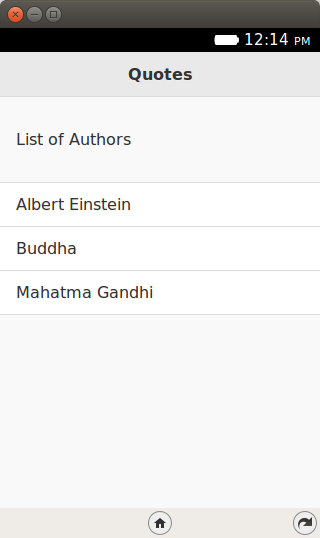
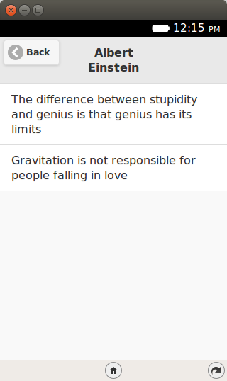
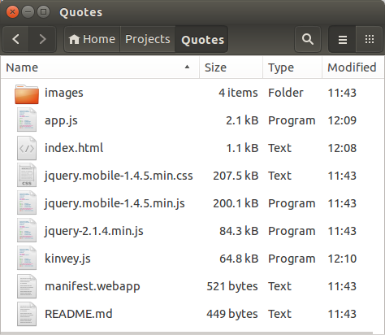
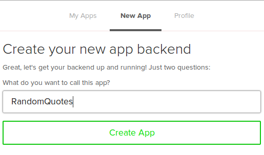

Welcome to Episode 10 of the Firefox OS App Developent Tutorial. In the previous episode, we looked at how you can use Device Storage in your Firefox OS Applications.
In this episode, we shall be taking a look at an emerging area known as Mobile Backend as a Service (mBaaS). The idea is that we shall be powered our Firefox OS Application from Server side infrastructure and functionality that shall be provided by the mBaaS Provider.
What we shall be doing is writing an application that displays random quotes. The quotes are those said by famous men over the years. For example, Albert Einstein said “The difference between stupidity and genius, is that genius has its limits” and so on. All these quotes will not be present locally in the Firefox OS App local storage or database, it will in fact be delivered from a server-side solution. This will make it easier for us to update the server-side with data whenever we want.
Let us check out the application in action first to understand what we are trying to do here.
What we shall write is a mobile application that shows us quotes made by famous personalities. We shall first show the list of famous personalities. When you select a personality, the quotes attributed to that person will be shown.
All right then, the first screen of the mobile app is shown below:
This screen shows the list of personalities. When you click on a particular personality, say “Albert Einstein”, you will see the quotes attributed to him as shown in the screen below.
Keep in mind that all data for this application is accessed from a hosted application that is running on the mBaaS provider Kinvey’s infrastructure. We shall see how easy it is to focus on your mobile functionality and let the heavy duty work of a server-side solution be taken care of by a provider, like Kinvey.
The data is limited here, since I have just pulled some quotes from the Brainy Quote site and populated my data store that is hosted on Kinvey.
I suggest that you begin with a full download of the project source code. Since the project depends on libraries like jQuery and jQuery Mobile, it will save you the hassle of downloading the dependent libraries.
Go ahead & download the code from: https://github.com/anicholakos/Quotes
Extract all the code in some directory. You should see a directory structure inside of Quotes, that looks something like this:
mBaaS stands for Mobile Backend as a Service. To give it some context, one of the challenges that most mobile developers face is that sooner or later, they have to create a common server side solution which can contain functionality for managing users, storing data in the cloud, etc.
For example, consider that you are writing a mobile game and you wish to track high scores across your different users. In such a scenario, you have no option but to centrally store user scores in some sort of a server side solution. This is all and good but what this means is that you have to now learn a server side stack and figure out how to write server side applications, host them and manage them. This takes away your focus as a mobile developer but it is not a problem that you can wish away. Typically there will be folks who are good on the server-side and they can help you with the development, but if you are familiar with only the mobile client side of things, chances are that you want to get quickly started with it, almost no coding and still get the best of breed server side solution.
This is exactly the spot that mBaaS providers want to address. They want you to focus on your application and its common needs on the server-side like users, authentication, data store to store application data and many such common services. All access of these services will be provided via a REST API or individual client side libraries that will wrap the calls and make it as easy as possible for you to invoke the operations in the cloud. The mBaaS providers also take the pain of hosting and running your site, so that is a great plus.
There are many such mBaaS players out there and in this episode, we shall take a look at Kinvey that I was able to get up and running for the Random Quotes application within literally minutes. It is not a stretch of my imagination but I got things up within an hour of signing up and that included accessing my data via the JavaScript wrapper that Kinvey provides.
So to summarize, what we want to do with Kinvey at a high level is as follows:
The rest of the stuff is simply your client side functionality.
One point to note is that we have used Kinvey in the article but if you try out other mBaaS solutions, you will find that at a conceptual level, they do the same thing. I am not going to pit one against the other and which one is better. I just haven’t done detailed research to give that kind of data here. I signed up for Kinvey, found its process super smooth and everything worked as documented. That is what I look for in any external public facing API. The rest is just your functionality.
In this section, I am going to do my best to explain to you the process of signing up for Kinvey, creating your application and all the steps that we identified in the previous section.
The first thing you will need to do is sign up for Kinvey. Visit https://console.kinvey.com/ and sign up for the Service. You can go with the free plan for the moment.
Once you have signed up successfully, you will be asked to create a new application. Go ahead and create it. My new application screen is shown below and you can use the same thing.
The first thing we should discuss is the manifest file. This should be familiar by now, it has the standard attributes like name and version. There is nothing special happening here.
Note that since we will be making external calls to the Kinvey service, we need to mark the application as privileged and also to mention the permission for systemXHR so that outbound HTTP calls are permitted.
1 2 3 4 5 6 7 8 9 10 11 12 13 14 15 16 17 18 19 20 21 | {
"version":"2.0",
"name": "Quotes",
"description": "Quotes app powerd by mBaaS",
"launch_path": "/index.html",
"icons": {
"128": "/images/quotes_128.png",
"512": "/images/quotes_128.png"
},
"developer": {
"name": "Romin Irani",
"url": "http://www.rominirani.com"
},
"default_locale": "en",
"type": "privileged",
"permissions": {
"systemXHR": {
"description": "Required to make Ajax Calls over the Network"
}
}
}
|
Next up is the index.html page, which is just a simple jQuery Mobile page.
1 2 3 4 5 6 7 8 9 10 11 12 13 14 15 16 17 18 19 20 21 22 23 24 25 26 27 28 29 30 31 32 33 34 35 36 37 38 39 40 41 42 43 44 45 46 47 | <!DOCTYPE html>
<html>
<head>
<meta charset="utf-8">
<meta name="viewport" content="width=device-width, initial-scale=1">
<title>Quotes</title>
<link rel="stylesheet" href="jquery.mobile-1.4.5.min.css">
<script src="jquery-2.1.4.min.js"></script>
<script src="jquery.mobile-1.4.5.min.js"></script>
<script src="kinvey.js"></script>
<script src="app.js"></script>
</head>
<body>
<!-- Start of first page: #home -->
<div data-role="page" id="home">
<div data-role="header" data-position="fixed">
<h3>Quotes</h3>
</div><!-- /header -->
<div data-role="content">
<p>List of Authors</div>
<ul data-role="listview" id="authorList">
</ul>
</div><!-- /content -->
</div><!-- /page home -->
<!-- Start of second page: #quotespage -->
<div data-role="page" id="quotespage">
<div data-role="header" data-position="fixed" data-add-back-btn="true">
<h3 id="quotesTitle" style="white-space:normal;"></h3>
</div><!-- /header -->
<div data-role="content">
<ul data-role="listview" id="quotesList">
</ul>
</div><!-- /content -->
</div><!-- /page quotespage -->
</body>
</html>
|
Let us discuss the index.html page in detail now:
1 2 3 4 5 6 7 8 9 10 11 12 13 14 15 16 17 18 19 20 21 22 23 24 25 26 27 28 29 30 31 32 33 34 35 36 37 38 39 40 41 42 43 44 45 46 47 48 49 50 51 52 53 54 55 56 57 58 59 60 61 62 63 64 65 66 67 68 69 70 | var quotes = [];
var authors = [];
function mBaasInit() {
var promise;
promise = Kinvey.init({
appKey: 'kid_TVIdIGLX_5',
appSecret: 'c451f2ac2f7742ddb488f757db2f15d2'
});
promise.then(function (activeUser) {
console.log("All is well in Kinveyland");
populateAuthors();
}, function (error) {
alert("Could not initialize Kinvey");
});
}
function populateAuthors() {
var promise = Kinvey.DataStore.find('Authors', null, {
success: function (response) {
var result = "";
authors = [];
for (var i = 0; i < response.length; i++) {
var author = response[i];
authors.push(author);
$("#authorList").append('<li>' + author.name + '</li>').listview('refresh');
}
}
});
}
function populateQuotes(author) {
var query = new Kinvey.Query();
query.equalTo('who', author);
var p = Kinvey.DataStore.find('Quotes', query, {
success: function (response) {
var result = "";
quotes = [];
for (var i = 0; i < response.length; i++) {
var quote = response[i];
quotes.push(quote);
}
//Change the page now
$.mobile.changePage($("#quotespage"));
}
});
}
$(document).bind('pageinit', function () {
$('#authorList').empty();
$("#authorList").listview('refresh');
//Initialize Kinvey
mBaasInit();
//When an Author List Element is clicked, fetch their quotes
$(document).on('click', '#authorList li', function () {
populateQuotes($(this).text());
});
//When quotespage is live, clear the current quotes and populate the new ones
$('#quotespage').on('pageshow', function () {
$('#quotesList').empty();
$('#quotesTitle').text(quotes[0].who);
for (var i = 0; i < quotes.length; i++) {
$('#quotesList').append('<li><div style="white-space:normal;">' + quotes[i].what + '</div></li>');
$('#quotesList').listview('refresh');
}
});
});
|
Let us discuss the source code in detail now.
This completes our discussion of writing Firefox OS applications that are powered by a mBaaS. Load it in the WebIDE and run it on the simulator to see it in action.
{kind=link}
{kind=link}
{kind=link}
{kind=link}